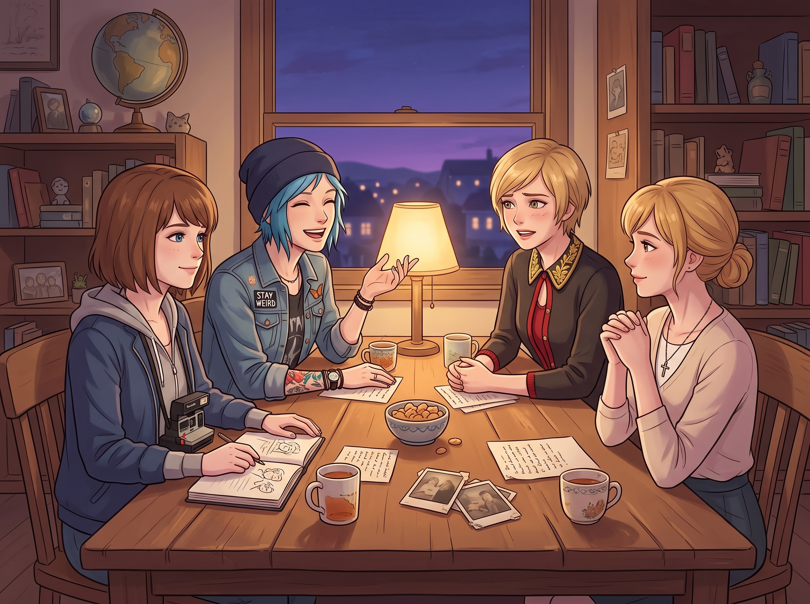

遲來的童年

這四個人不僅是「95後」，而且是極其標準的「1995年生代」。她們的童年橫跨了千禧年的交替與2000年代的黃金流行期。如今在這片遠離父母與世俗規則的華盛頓州海灣，擁有了絕對自主權的四人，終於有機會把那些年因為家庭管教、階級束縛或意外搬家而留下的童年遺憾，用最瘋狂的方式彌補回來。
一個週五的傍晚，長桌前的閒聊不知怎麼就聊起了小時候的事——租錄影帶、燒混音CD、翻蓋手機盲打簡訊——聊著聊著，氣氛忽然變得有些微妙。
一、Kate 的遺憾：被宗教抹殺的世俗魔法與垃圾碳水
「我小時候……其實從來沒看過《哈利波特》。」Kate 低頭攪拌著手裡的花草茶，語氣輕描淡寫，「家裡不准接觸任何跟魔法、巫術有關的東西，連麥片都只能吃無糖燕麥的那種。」
車廂裡安靜了兩秒。
「什麼？！」Chloe 猛地從沙發上彈起來，「妳的意思是妳整個童年，連一次巫師學校都沒去過？！」
當天晚上，Chloe 和 Max 直接在二號車廂拉起了投影幕，強行舉辦了一場「哈利波特與魔戒通宵異教徒馬拉松」。Victoria 甚至放下身段，開車去鎮上買了整整三盒五顏六色的幸運星棉花糖麥片。
Kate 穿著睡衣，捧著一大碗甜到發膩的彩色棉花糖麥片，一邊嚼著一邊盯著屏幕上的魔法大戰發出驚呼，眼睛亮得像個第一次看見聖誕樹的孩子。另外三人縮在沙發另一端，看著她這副模樣，露出了老父親般欣慰的笑容。
「這個……這個叫『咒語』對吧？」Kate 指著屏幕，滿臉認真地確認。
「對，長官，這叫咒語。」Chloe 忍著笑點頭，「歡迎來到麻瓜世界的另一半。」
二、Victoria 的遺憾：被精英教育剝奪的無序與骯髒
輪到 Victoria 沉默的時候，她一開始死活不肯開口。
「說吧，大股東，」Chloe 用手肘撞了撞她，「妳這輩子肯定也錯過了什麼吧？」
Victoria 沉默了半晌，才別過臉，語氣裡帶著一絲不易察覺的彆扭：「……我沒有搭過帳篷。鋼琴課、法語家教、畫廊禮儀占滿了我所有的週末，我甚至不知道用紙箱搭秘密基地是什麼感覺。」
第二天下午，Chloe 仗著自己手裡有重工業物料，直接用防水篷布、廢棄的航空箱和十幾條厚重的工裝毛毯，在起居廂中央搭起了一個「史上最硬核的室內帳篷堡壘」。
「我才不要鑽進那個……」Victoria 抱著雙臂站在堡壘外，滿臉嫌棄地看著那堆像難民營一樣的布堆，「這簡直是對居家美學的侮辱。」
但當 Max 端著裝滿熱可可的保溫瓶和一袋彩色軟糖，笑著一把將她拉進掛滿星星燈串的溫暖帳篷時，名媛那根緊繃了二十年的精英神經，終於在溫暖的燈光和熱可可的香氣裡斷了。
不到十分鐘，Victoria 已經窩在堡壘最深處，一邊小口啃著軟糖，一邊跟 Chloe 搶最後一顆藍色的糖，嘴上還嘟囔著「這只是暫時的、絕不會再有第二次」，卻在稍後霸佔了整個帳篷裡最柔軟的那個航空箱睡墊，怎麼都不肯讓出來。
三、Max 與 Chloe 的遺憾：永遠停留在十三歲的海盜承諾
深夜，帳篷堡壘裡只剩下均勻的呼吸聲，Kate 和 Victoria 早已相繼睡去。
Max 和 Chloe 並排坐在帳篷邊緣，聽著窗外海浪拍打懸崖的聲音，誰都沒有先開口。
「妳還記得那座樹屋嗎？」過了很久，Max 才輕聲問。
Chloe 的呼吸頓了一下：「怎麼可能忘。我們才搭了一半，木板都還沒釘穩……」
那是2008年，十三歲的 Max 突然搬去西雅圖，留下了剛失去父親的 Chloe，也讓她們在阿卡迪亞灣後院那座只搭了一半的海盜樹屋永遠成了爛尾工程。這是兩人心裡最隱秘、也最沉重的一根刺。
「我們現在有了整整一片松林。」Max 抬起頭，眼神在黑暗裡格外清亮，「不如，把它蓋完？」
第二天清晨，Chloe 開著皮卡運來了最好的防腐木材和角鋼。這一次，不再是兩個小孩用錘子亂敲的危險木板，而是擁有鋼結構支撐、太陽能供電、甚至裝了藍牙音箱的重工業級瞭望塔。
兩人一連忙了三天。Chloe 負責焊接鋼架、固定支撐柱，Max 則爬上爬下，仔細打磨每一塊木板的邊緣。
當 Max 拿著電動螺絲起子，將最後一塊刻著兩人童年海盜標誌的木板，鄭重地釘在懸崖邊那棵挺拔的松樹上時，Chloe 站在樹下，仰頭看著那個沒有再離開自己的女孩，眼眶微微泛紅，卻笑著遞上了一罐冰鎮的櫻桃可樂。
「完工了，船長。」Chloe 的聲音有些發啞。
Max 從瞭望塔上跳下來，一把接過可樂，兩人的目光在夕陽下交匯。沒有太多言語，只有一個長久的擁抱，把十年前那場倉促的告別、以及這些年繞了一大圈才走回彼此身邊的路，都輕輕地揉進了這個瞬間裡。
四、週末夜的圓滿定格
深夜，四個人擠在 Victoria 曾經最嫌棄的毛毯堡壘裡。
投影儀上播放著《海綿寶寶》電影版，中間放著一大盆極其不健康的起司爆米花和一堆空的可樂罐。
Kate 抱著膝蓋，已經看著魔法電影安穩地睡著了，嘴角還帶著一絲微笑；Victoria 頭髮凌亂，毫無形象地倒在抱枕上，手裡還緊緊攥著半袋本不該出現在她食譜上的彩色軟糖；而 Chloe 和 Max 則並排靠在帳篷邊緣，望向窗外那座在月光下靜靜矗立的海盜瞭望塔，交換了一個釋懷的眼神。
那些被大人世界的規矩、家庭的變故與階級的枷鎖偷走的千禧年童年，終於在這兩節孤獨卻溫暖的鋼鐵車廂裡，被她們親手一寸一寸地拼湊了回來。